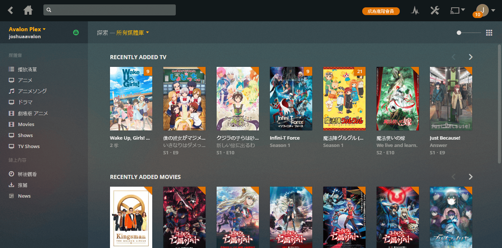
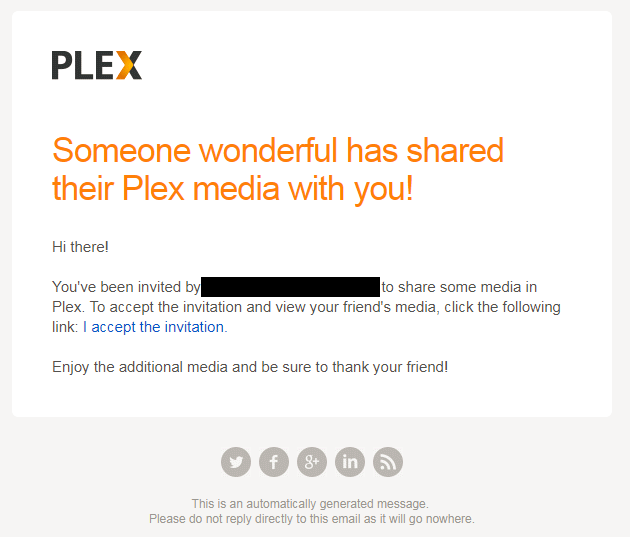
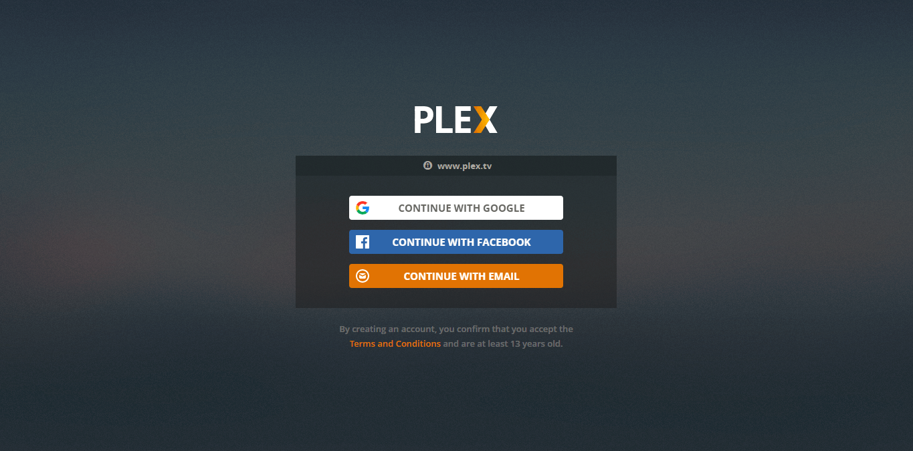
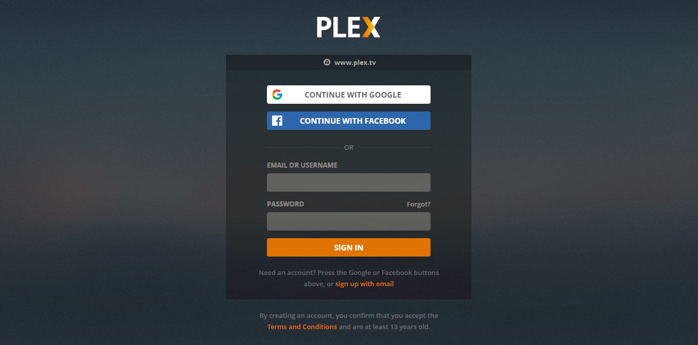
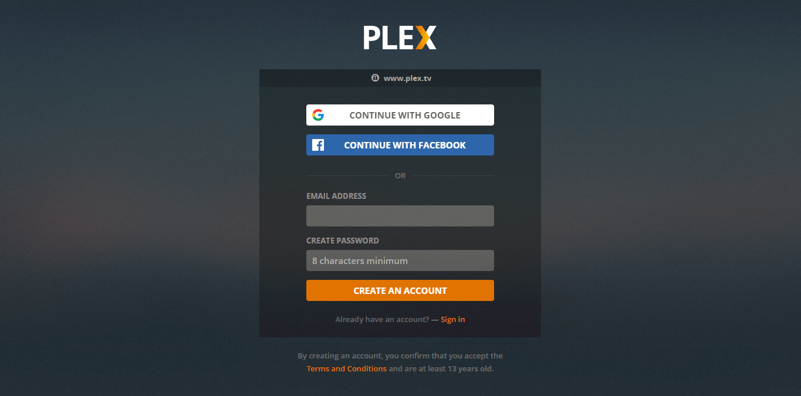
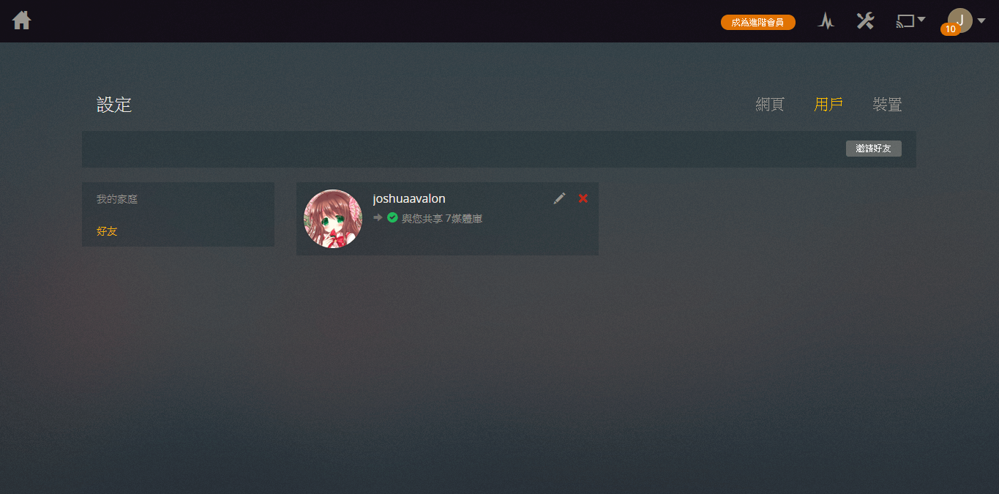

簡介
歡迎來到《Plex 使用者指南》。本指南將引導你設置你的客戶端(不含伺服器)。
提示
若你已經有Plex的帳戶並了解Plex是甚麼，請從左方選擇你的客戶端。 如果你是首次使用該客戶端
Plex是甚麼
Plex是由用使用者自行架設的多媒體分享伺服器，簡單而言，就是自己的Netflix。使用者可以從電腦、手機及電視隨時隨地看到伺服器的內容， 而不用將影片先複製到裝置之上。若你的裝置不能播放某格式的影片的話，Plex伺服器也會幫你轉到合適的格式。

如何註冊Plex帳戶
目前有兩種方法註冊，分別為用家邀請及自行註冊。
若被其他用家邀請的話，你將收到一封電郵。點擊I accept the invitation。

若是自行註冊的話，前往https://www.plex.tv/sign-up/。
兩都都會看到以下畫面。

使用電郵帳戶註冊
點擊CONTINUE WITH EMAIL

點擊sign up with email

於EMAIL ADDRESS輸入你希望使用的電郵地址。於CREATE PASSWORD輸入不少於八個字的密碼。點擊CREATE AN ACCOUNT註冊。
使用Google帳戶註冊
點擊CONTINUE WITH GOOGLE，並按照新開視窗的指示，允許Plex使用你的Google帳戶作登入。
使用Facebook帳戶註冊
點擊CONTINUE WITH FACEBOOK，並按照新開視窗的指示，允許Plex使用你的Google帳戶作登入。
註冊成功
註冊成功後，你將看到以下畫面。

提示
若你被其他用家邀請的話，你將看到他分享給你的Plex。否則只是空白一片。
接下來請進行首次設定。
請選擇你的客戶端繼續: 網頁版、Android版、iOS版。
常見問題
封面右上角的橙色是甚麼?
右上角的橙色代表你未觀看。若中間有數字的話，代表有多少集未觀看。
為甚麼沒有字幕?
少部份內容是沒有字幕。